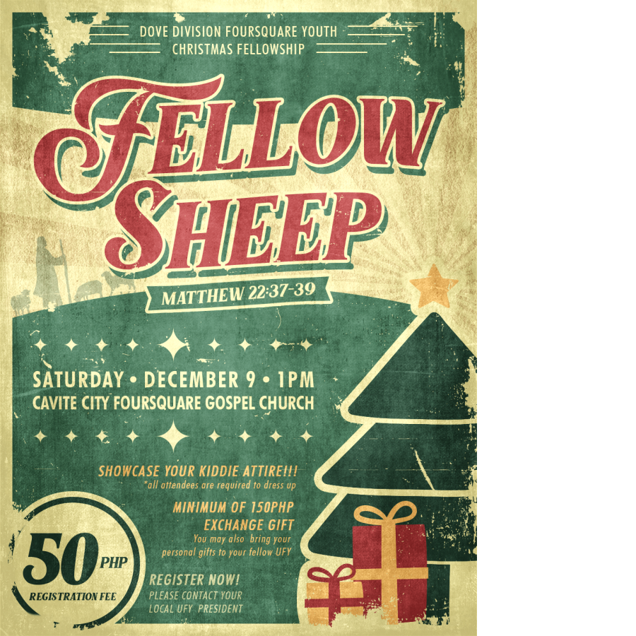
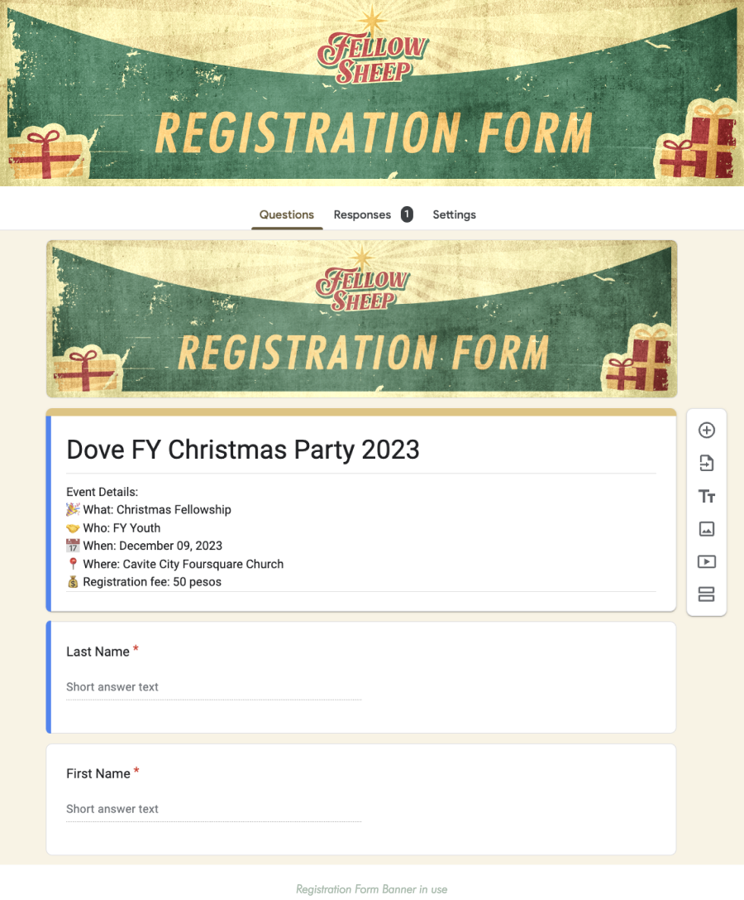

For this event, I was assigned to be one of the Multimedia Team Head, along with Paul Salme. While he led the documentation, I led the graphic design creation and program presentation.
This event's Project Head requested retro-style designs similar to the Fallout game graphics. While this is a Christmas special event that's kiddie-party themed, I tried to incorporate all of those elements through the concept of "nostalgia". In order to achieve this, I researched for some references that would serve as my inspirations for the overall aesthetic.
Crafted with a color palette of green, red, and yellow, this poster radiates warm Christmas vibes. I chose Marons, an elegant typeface blending scripts and serifs, perfect for the Retro Christmas graphics. I paired it with Futura, a geometric sans serif that has futuristic aesthetic, balancing out the heaviness of the decorative font.
I incorporated simple illustrations to subtly convey a narrative. While sunbursts are a common feature in retro backgrounds, the one positioned here holds special significance. Radiating from the star above the Christmas tree, it symbolizes the Star of Bethlehem guiding the wise men to Jesus' birthplace. Similarly, this event centers around celebrating Christ's birth. On the opposite side of the poster, a shepherd and his sheep gaze towards the star, representing God as our shepherd and us, His flock, eagerly anticipating this fellowship.
We held a 2 week-long social media promotion which included registration updates, countdowns, as well as contest and exchange gift guidelines.
I prepared presentation slides to be used during the event. These included countdown timer video, worship lyrics background, program segment slides, and award ceremony recognition cards.
I also created designs for banners to be displayed around the venue, name tags for attendees to wear, and multiple stickers to be given out for free.